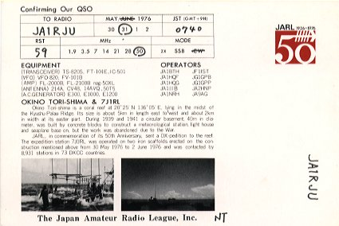

話題の局・QSL
7J1RL Okino Torishima


7J1RL(JARL)
1976年5月30日から6月2日にかけてJARL創立50周年を記念して
沖の鳥島から運用した7J1RL。その後、消滅エンティティーと
なった。1976年5月30日から1980年11月30日までのQSOが有効。

7J1RL(JARL)
1976年5月30日から6月2日にかけてJARL創立50周年を記念して
沖の鳥島から運用した7J1RL。その後、消滅エンティティーと
なった。1976年5月30日から1980年11月30日までのQSOが有効。